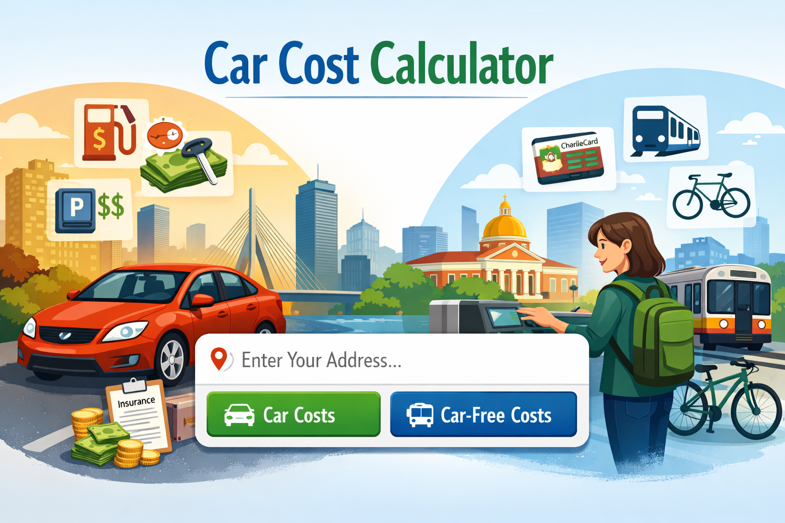

Note: This is a student project. Learn more about our team
Is owning a car in Boston worth it? This website helps you compare the costs of life with a car versus life without one. Browse example lifestyles—like students, families, or daily commuters—or use the interactive calculator to estimate costs based on your address and transportation habits.
